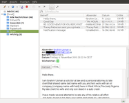
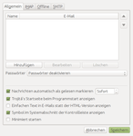
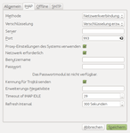
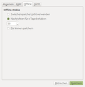
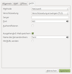

Trojita
Dieser Artikel wurde für die folgenden Ubuntu-Versionen getestet:
Ubuntu 16.04 Xenial Xerus
Ubuntu 14.04 Trusty Tahr
Zum Verständnis dieses Artikels sind folgende Seiten hilfreich:
|  |
| Programmoberfläche |
Trojitá  ist ein einfach zu bedienendes E-Mail-Programm. Unterstützt wird nur das Protokoll IMAP. Mit klassischen POP3-Postfächern kann das Programm daher nicht genutzt werden.
ist ein einfach zu bedienendes E-Mail-Programm. Unterstützt wird nur das Protokoll IMAP. Mit klassischen POP3-Postfächern kann das Programm daher nicht genutzt werden.
Merkmale:
Reines Qt-Programm ohne KDE-Abhängigkeiten
Robuste IMAP-Implementierung
On-demand-Abruf von Betreffzeilen und Nachrichtentext
Offline-IMAP-Unterstützung
Bandbreitenschonender Modus für Benutzer von mobilen Internetverbindungen
IMAP über SSH - neben SSL-/TLS-Verbindungen kann ein Server auch via SSH kontaktiert werden
Sichere Anzeige von HTML-Mails
Einhaltung von internationalen Standards als Designziel
Realisiert wurde das für Linux und Windows verfügbare Programm auf Basis der Grafikbibliothek Qt. Unterstützt werden sowohl Version 4 als auch Version 5 von Qt (ab Version 0.7 nur noch Qt5).
Installation¶
 Trojitá ist nicht in den offiziellen Paketquellen enthalten. Zur Installation muss man auf eine Fremdquelle ausweichen.
Trojitá ist nicht in den offiziellen Paketquellen enthalten. Zur Installation muss man auf eine Fremdquelle ausweichen.
Fremdquelle¶
Die Entwickler bieten ein OBS-Repository als Fremdquelle an. Nachfolgend die Befehle zum Einrichten und Authentifizieren der Paketquelle am Beispiel von Ubuntu 14.04. Für andere Ubuntu-Versionen ist die Versionsnummer im Repository-Namen "xUbuntu_14.04" entsprechend anzupassen. Zu beachten ist, dass "xUbuntu" nicht für "Xubuntu" steht, sondern allgemein für alle Ubuntu-Distributionen/-Varianten sowie für Distributionen, die auf der jeweiligen Ubuntu-Version basieren.
Um das OBS-Repository einzurichten, kann man entweder die URL "http://download.opensuse.org/repositories/home:/jkt-gentoo:/trojita/xUbuntu_14.04/ /" in der Paketverwaltung hinzufügen oder den folgenden Befehl ausführen [1][2][3]:
sudo add-apt-repository 'deb http://download.opensuse.org/repositories/home:/jkt-gentoo:/trojita/xUbuntu_14.04/ /'
Hinweis!
Zusätzliche Fremdquellen können das System gefährden.
Anmerkung: Das OBS-Repository unterstützt nicht zwangsläufig alle Ubuntu-Versionen. Weitere Informationen zur Installation und den aktuell unterstützten Distributionen und Versionen finden sich auf der Projektseite und in der Übersicht des Repository .
Um die Fremdquelle zu authentifizieren, kann man
entweder den Signierungsschlüssel herunterladen  und in der Paketverwaltung hinzufügen oder folgenden Befehl ausführen:
und in der Paketverwaltung hinzufügen oder folgenden Befehl ausführen:
wget -q http://download.opensuse.org/repositories/home:/jkt-gentoo:/trojita/xUbuntu_14.04/Release.key -O- | sudo apt-key add -
Nach dem Aktualisieren der Paketquellen erfolgt die Installation über das folgende Paket [4]:
trojita (OBS)
trojita-plugin-qtkeychain (OBS, optional, sicherere Speicherung von Kennwörtern)
 mit apturl
mit apturl
Paketliste zum Kopieren:
sudo apt-get install trojita trojita-plugin-qtkeychain
sudo aptitude install trojita trojita-plugin-qtkeychain
Verwendung¶
Bei Ubuntu-Varianten mit einem Anwendungsmenü erfolgt der Programmstart über "Internet -> Trojitá" [5].
Beim ersten Programmstart öffnen sich automatisch die Einstellungen, um ein IMAP-Konto zu konfigurieren. Die konkreten Angaben (Benutzername, Kennwort, IMAP-Server, SMTP-Server und Transportverschlüsselung) hängen vom jeweiligen E-Mail-Konto ab und müssen entsprechend eingetragen werden. Apropos Kennwort: dieses kann, muss aber nicht gespeichert werden.
Geboten werden alle wesentlichen Grundfunktionen eines E-Mail-Programms. Hervorzuheben und in der täglichen Praxis nützlich sind drei Dinge:
Über "IMAP -> Kurzbefehle festlegen" ist eine Liste der Tastenkürzel erreichbar, die auch erweitert werden kann
Einzelne E-Mails können mit einem oder mehreren Stichwörtern (Tags) versehen werden. Allerdings fehlt bisher eine entsprechende Suchfunktion (Version 0.5).
Um unteren rechten Fensterrand befindet sich ein Symbol, um zwischen den Modi "Offline" (keine Internetverbindung), "Teure Verbindung" und "Kostenfreier Zugriff" umschalten zu können. Damit ist es bei mobilen Internetverbindungen (UMTS, LTE) möglich, Bandbreite und damit Kosten zu sparen.
Eher für Fortgeschrittene und Profis interessant sind ein ausführliches Verbindungsprotokoll und die Möglichkeit, bei Bedarf den kompletten Mailheader anzuzeigen ( "-> Vorspannfelder anzeigen...").
"-> Vorspannfelder anzeigen...").
Einstellungen¶
Die Programmeinstellungen sind über "IMAP -> Einstellungen" zu erreichen.
|  |
| Allgemein |
|  |
| IMAP |
|  |
| Offline |
|  |
| SMTP |
Gespeichert werden diese in der Datei ~/.config/flaska.net/trojita.conf.
Problembehebung¶
Einschränkungen¶
Bedingt durch das frühe Entwicklungsstadium gibt es folgende Einschränkungen (Version 0.5):
Nur ein IMAP-Konto nutzbar. Allerdings bietet der Einsatz von Profilen die Möglichkeit, mehrere Programminstanzen mit unterschiedlichen Konten zu starten (siehe auch Trojita 0.4 "Ukraine" is released
).Eine Druckfunktion ist nicht vorhanden
Das interne Adressbuch ist nicht benutzbar
Keine Unterstützung von GnuPG
Keine Unterstützung von S/MIME-Zertifikaten
Zumindest existiert eine Transportverschlüsselung (sicherer Abruf/Versand) – aber nur, wenn der jeweilige Mailprovider das anbietet.
Fehlender Benutzername bei Abruf/Versand¶
Wird der Abruf/Versand von E-Mails aufgrund eines fehlenden Benutzernamens verweigert, beendet man das Programm und bearbeitet die Datei ~/.config/flaska.net/trojita.conf mit einem Editor [6]. Folgende Zeilen sind anzupassen:
imap.auth.user=E-MAIL-ADRESSE_ODER_BENUTZERNAME msa.smtp.auth.user=E-MAIL-ADRESSE_ODER_BENUTZERNAME
Hinweis:
Da sich das Programm u.U. nicht beendet, sondern nur in die Taskleiste minimiert, sollte auch dort kontrolliert werden, ob das Programm wirklich geschlossen wurde. Dieses Verhalten kann in den allgemeinen Einstellungen geändert werden.
Links¶
Dokumentation
zur Programmkonzeption und Vergleich mit anderen Programmen
Trojitá, ein schnelles Emailprogramm
 - Blogbeitrag, 02/2016
- Blogbeitrag, 02/2016My Week with Trojita
- Blogbeitrag, 02/2015Geary - alternatives Programm für IMAP
E-Mail
 Programmübersicht
Programmübersicht
- Erstellt mit Inyoka
-
 2004 – 2017 ubuntuusers.de • Einige Rechte vorbehalten
2004 – 2017 ubuntuusers.de • Einige Rechte vorbehalten
Lizenz • Kontakt • Datenschutz • Impressum • Serverstatus -
Serverhousing gespendet von